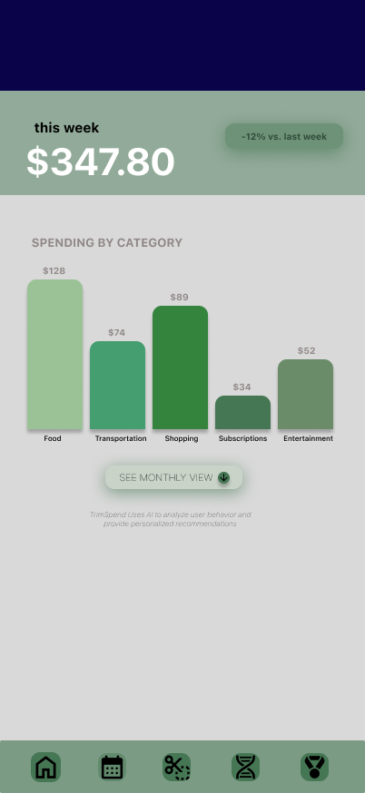

Spending dashboard
Weekly categories make small recurring purchases easier to notice.
01 / TRIMSPEND — FINANCIAL WELLNESS
A budgeting-app concept for college students, developed as a two-designer team project. The prototype connects spending categories, visual budget reductions, and suggestions for lower-cost alternatives.
Try the prototype ↓UX RESEARCH / INTERACTION DESIGN / UI DESIGN

 A better relationship with your money.
A better relationship with your money.Frequent purchases in food, transportation, retail, and entertainment add up quickly. Existing tools create visibility, but students still need support turning that visibility into a concrete reduction plan.
Weekly categories make small recurring purchases easier to notice.
Users visually reduce an over-budget category and see the impact.
Personalized suggestions shift the experience from monitoring to action.
THE EXPERIENCE / UP CLOSE
Actual project screens, with the details that shape each decision. Select a full screen to inspect it.
A weekly view makes small purchases visible. Categories help students see where their money goes before deciding what to change.

The monthly view pairs category budgets with a clear trim action. The shopping category and its “Trim overspending” button make the next step easy to find.
A personal spending profile connects patterns to practical alternatives. The recommendation cards bring lower-cost choices into the same view.
The concept turns spending patterns into clearer choices and more approachable goals.
SCREEN STUDIES / SELECT TO ENLARGE
A complete view of the core prototype screens. Each frame opens at full size.
See how survey findings informed the prototype, from category awareness to practical alternatives.
RESEARCH → DESIGN DECISIONS
The team surveyed 32 participants aged 17–24. These are self-reported findings from the project deck, not measured outcomes from a launched app.
The deck reports that 54.8% tracked spending only occasionally and over 80% noticed overspending after purchases. The concept groups purchases by category to make recurring costs more visible.
93.5% expressed interest in a visual spending-reduction tool. The “trim” interaction lets someone explore a lower category budget and see the change.
86.7% said cheaper product recommendations would be useful. The concept places lower-cost options alongside spending insights.
These are proposed capabilities from the pitch. Their accuracy, usefulness, and effect on spending still need validation.
View the original presentation ↗INTERACTIVE PROTOTYPE
The next step is a usability study around the trim interaction and cheaper-alternative recommendations. Measures would include task completion, comprehension, recommendation trust, and whether users return to adjust goals over time. I would also test whether the tone feels supportive instead of judgmental, because financial tools can lose trust quickly when they feel too harsh.
next: Sensibl{kind=link}
{kind=link}